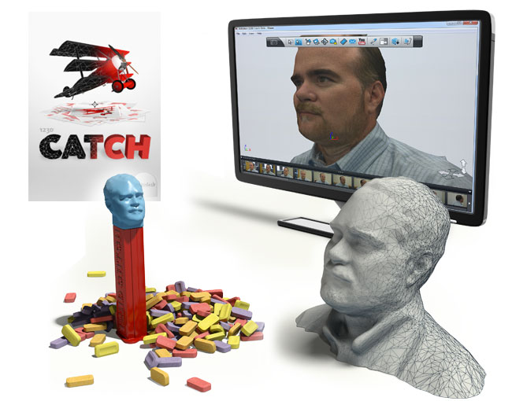
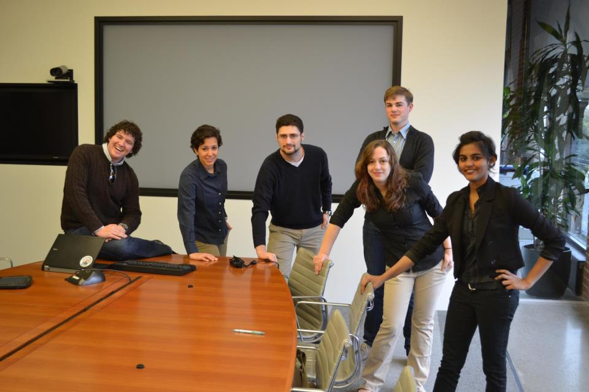

Every senior engineering student at Olin College is required to complete an engineering capstone project. My team worked with Autodesk Inc. on a design project to bring more STEM initiatives to secondary school classrooms.
Abstract: Autodesk has developed a collection of five simple 3D modeling applications aimed for prominence in the consumer computer-aided design software market. They are interoperable and all can post content to a shared 123D online community. The mission of this project is to design a solution that enhances the experience of students using the 123D software. (Below is an illustration of how 123DCatch was used to take a 360 panoramic visual of a person, render it in the 123D software, and 3D print a bust.)

Result: Our year-long project ended in presenting a deliverable that Autodesk can use and modify for the future. A publicly-available abstract and final poster for the project can be found at the Olin College Digital Commons archive.
This corporate project showed me what it's like to work for an engineering company. I enjoyed working with my team and our liaisons. I hope our work is used by Autodesk to inspire future designers and makers in middle and high school.
Below is a photo of my awesome team at Autodesk HQ in San Francisco.
